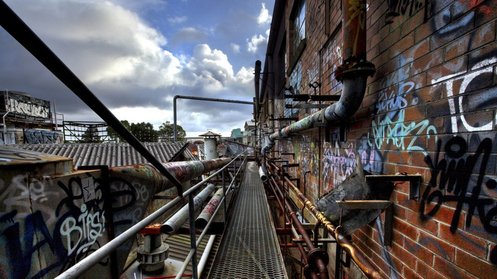

Tema 2: Arte Urbano

¿Qué significa Arte Urbano?
El término “Urbano” significa “de la ciudad”, lo cual se deriva de termino latín “urbanus”. El arte urbano se asocia al tipo de arte creado por artistas que viven, definen y expresan la experiencia de “la vida en la ciudad”. La temática general del arte urbano son sus ciudadanos, los edificios y las situaciones que solo se viven en la ciudad. La forma más común de arte urbano es el Grafiti.
¿Qué es el Arte Urbano?
Hay que entender que el Arte Urbano se refiere a un complejo diseño, comúnmente en las paredes, creado por artistas, los cuales hacen uso de años de práctica y experiencia para aplicar sus propias técnicas. El arte urbano, a diferencia del grafiti, se enfoca más en la aplicación de imágenes mientras que el grafiti -siendo un elemento central en el arte urbano- se enfoca más en elementos tipográficos. Un punto clave es que puede, pero no necesita, tener una dimensión política.
El objetivo del arte urbano es generar que los que vean la obra piensen, se entretengan, sean provocados o simplemente aprecien la obra por lo que es. Es común que el artista exprese sus propios sentimientos a través de su obra.

Descargado de Link

Descargado de Link

Descargado de Link

Descargado de Link

Descargado de Link

Descargado de Link
Concepto del Street Art
El concepto propiamente de arte urbano, es una versión traducida de la expresión inglesa “Street art”. Representa todo el arte creado y realizado en la calle, generalmente visto como ilegal, causando controversias y puntos de vista divididos entre sus adeptos y sus detractores.
Esta forma de arte público sucede por iniciativa exclusiva del artista, usualmente sin permiso y sin previo aviso, normalmente abandonado una vez que está terminada.
Relación con el Arte Público
Finalmente, el arte público es una categoría de arte que hace uso de los espacios como un elemento propio de la obra. Usualmente estos son elaborados con previo aviso y su característica principal es que están ubicados en lugares donde pueden ser fácilmente vistos por las masas.
Se diferencian de otras formas de arte en cuanto a que estas normalmente no modifican el lugar donde están ubicados (o son simplemente puestos en el lugar) sino que hacen uso de las peculiaridades del espacio como parte central o importante de la obra.
Videos de apoyo
Te invitamos a ver los siguientes videos con los cuales puedes aprender un poco màs del tema.